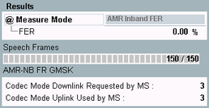

Mode AMR Inband FER
In "AMR Inband FER" mode, the frame error rate (FER) for inband signaling codewords is determined. Loop mode I is used. An AMR codec must be selected as "Traffic Mode".
This measurement mode measures the reference sensitivity and the co-channel rejection according to 3GPP TS 51.010. See sections "Reference Sensitivity – TCH/AFS-INB, TCH/AHS-INB" and "Co-Channel Rejection – TCH/AFS-INB, TCH/AHS-INB". Interfering signals must be provided by external means.
The UL and DL codec modes are changed every 22 speech frames according to the scanning pattern specified in 3GPP TS 51.010.
For information about loop mode I, see "Test Loops".

BER CS results (AMR inband FER mode)
- FER: Frame error rate for inband signaling codewords, percentage of erroneous frames (relative to total number of transferred frames)
A frame error is registered when the UL codeword received from the MS differs from the transmitted DL codeword. - Speech frames: number of already evaluated speech frames and total number of speech frames to be evaluated. One AMR speech frame contains one codeword.